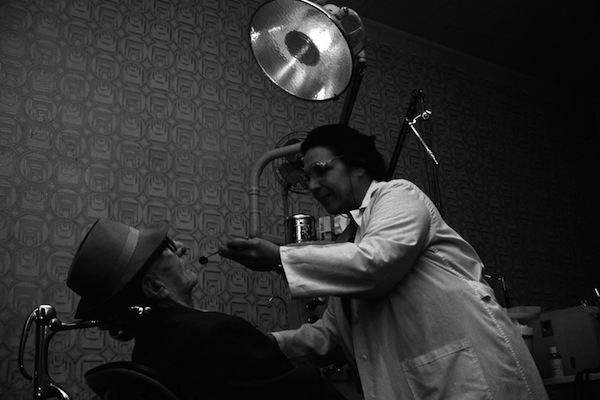

Pay is poor, particularly for GPs, and often based on pre-war values. Emigration is increasingly common.
The Royal Commission is appointed in March 1957 to settle an ongoing dispute between the medical profession and the Government over pay, which even leads to the Conservative Government planning for a ‘phased withdrawal’ from the NHS.
It attempts to reach a formula that would satisfy both parties and publishes its recommendations in 1960. A key recommendation is the creation of an independent review body system for deciding NHS doctors’ and dentists’ pay.
Image credit: Wikimedia Commons, 1998 © Nevit Dilmen.